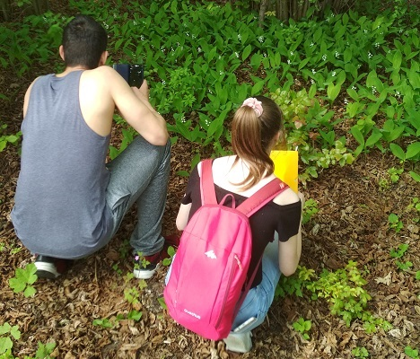

Mi a jelentősége?
Növényfenológiai megfigyelések
A növények fejlődése összegzi a környezeti hatásokat, így a növény kiváló meteorológiai eszköz az éghajlat, az éghajlat változásának jellemzésére.

Én is részt vehetek?
Legyen Ön is megfigyelő!
Önkénteseket keresünk növényfenológiai megfigyelésekhez. A feladat nagyon egyszerű, figyelni kell, hogy egy-egy növény pl. mikor kezd virágozni, és azt itt egy rövid regisztráció után rögzíteni.

Miről írtunk legutóbb?
{{ article[0].title }}
{{ article[0].abstract }}